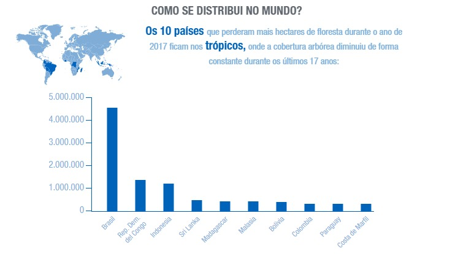
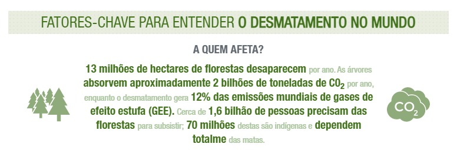

Estatísticas
Quase 31 % da superfície mundial está coberta por florestas. As florestas
proporcionam aos seres humanos o essencial para a sobrevivência: o ar que
respiramos, os alimentos que comemos e a água que bebemos. Abrangem mais
de 80 % de todas as espécies terrestres, tanto de animais quanto de
plantas e insetos, e mais de 1,6 bilhão de pessoas dependem das florestas
para sua subsistência. Porém, a ação do homem elimina 13 milhões de
hectares de florestas por ano.
Estima-se que mais de 2 bilhões de hectares da superfície terrestre estão
degradados, o que afeta diretamente o bem-estar de aproximadamente 3,2
bilhões de pessoas, acarreta a extinção de espécies e intensifica as
mudanças climáticas.
De 2015 a 2020, a taxa anual de desmatamento foi de 10 milhões de
hectares, em comparação com 12 milhões do período 2010-2015. Em termos
globais, as florestas deixaram de ocupar 31,9 % da superfície (2000) para
cobrir 31,2 % (2020). Entretanto, mesmo que o desaparecimento das
florestas continue sendo alto, os dados de 2020 mostram que aquelas que
estão em áreas protegidas aumentaram ou permaneceram estáveis. Atualmente,
de 4,060 bilhões de hectares florestais no mundo, mais da metade está
sujeita a planos de proteção.

Porém, a biodiversidade diminui num ritmo alarmante e a atividade humana
torna os ecossistemas mais frágeis e menos resistentes. O risco de
extinção de espécies piorou 10 % com relação às três últimas décadas. Atualmente, mais de 31.000 espécies estão em perigo de
extinção.
